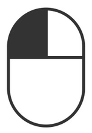
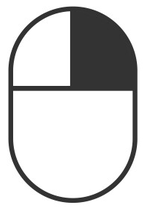

<!DOCTYPE html>
<html lang="en">
  <head>
    <meta charset="UTF-8" />
    <meta name="viewport" content="width=device-width, initial-scale=1.0" />
    <title>MC-JS — 3D Canvas Engine</title>
    <script src="block.js"></script>
    <script src="transform.js"></script>
    <script src="index.js" defer></script>
    <link rel="stylesheet" href="./style.css" />
    <link rel="icon" type="image/png" href="./assets/logo.png" />
  </head>
  <body>
    <div class="app-container">
      <!-- Left Panel: Engine Details & Architecture -->
      <aside class="panel left-panel">
        <header class="project-header">
          <h1>MC-JS</h1>
          <a href="https://github.com/plutoatsea/mc-js" target="_blank" rel="noopener noreferrer" class="repo-link">
            View Source on GitHub ↗
          </a>
        </header>

        <section class="card notice-card">
          <h2>Project Overview</h2>
          <p>
            An experimental 3D voxel rendering engine built in pure JavaScript. Developed as a proof-of-concept to explore low-level graphics pipeline algorithms, geometry culling, and interactive canvas rendering.
          </p>
        </section>

        <section class="card">
          <h2>Graphics Optimizations</h2>
          <ul class="feature-list">
            <li><strong>Neighbor face culling:</strong> Skips rendering of hidden adjacent faces</li>
            <li><strong>Backface culling:</strong> Discards polygons facing away from camera</li>
            <li><strong>Frustum/Center culling:</strong> Ignores blocks outside camera view</li>
            <li><strong>Near-plane depth clipping:</strong> Prevents distortion from close vertices</li>
            <li><strong>Dynamic LOD grid:</strong> Scales triangle density based on distance</li>
            <li><strong>Triangle gap expansion:</strong> Fixes floating-point raster gaps</li>
            <li><strong>Bilinear quad interpolation:</strong> Maps texture points smoothly across surfaces</li>
            <li><strong>Spatial Map Lookup:</strong> $O(1)$ raycast checking for block interactions</li>
            <li><strong>Dirty-region rendering:</strong> Redraws canvas only on state change</li>
            <li><strong>Texture Caching:</strong> Reuses preloaded image assets across blocks</li>
          </ul>
        </section>
      </aside>

      <!-- Center: Main Canvas -->
      <main class="viewport-container">
        <canvas id="game"></canvas>
      </main>

      <!-- Right Panel: Controls & Gameplay -->
      <aside class="panel right-panel">
        <section class="card">
          <h2>Controls & Inputs</h2>
          
          <div class="control-group">
            <h3>Camera & Movement</h3>
            <div class="key-graphic">
              
            </div>
            <p>Move camera with <strong>WASD</strong>. Use mouse to look around.</p>
            <ul class="key-list">
              <li><kbd>Space</kbd> Fly upwards</li>
              <li><kbd>Shift</kbd> Fly downwards</li>
              <li><kbd>Esc</kbd> Release mouse pointer lock</li>
            </ul>
          </div>

          <hr class="divider" />

          <div class="control-group">
            <h3>Block Interaction</h3>
            <div class="mouse-actions">
              <div class="action-item">
                
                <span><strong>Hold Left Click:</strong> Break block</span>
              </div>
              <div class="action-item">
                
                <span><strong>Right Click:</strong> Place block</span>
              </div>
            </div>
            <p class="scroll-note"><strong>Scroll Wheel:</strong> Cycle hotbar selection</p>
          </div>
        </section>

        <section class="card">
          <h2>Engine Features</h2>
          <ul class="check-list">
            <li>Real-time raycast block target detection</li>
            <li>Hotbar selection & texture preview</li>
            <li>Block breaking animations & progress states</li>
            <li>Custom mouse button & PointerLock API handling</li>
          </ul>
        </section>
      </aside>
    </div>
  </body>
</html>